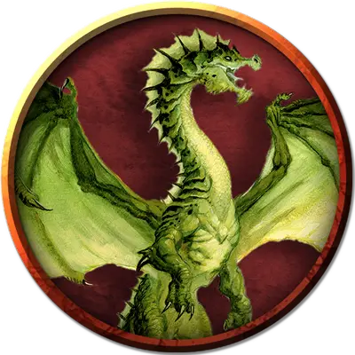

Молодой зеленый дракон
Young Green Dragon
Большой Дракон, законно-злой

Класс Доспеха 18 (природный доспех)
Хиты 136 (16к10 + 48)
Скорость 40 футов, плавая 40 футов, летая 80 футов
| мод | спас | ||
|---|---|---|---|
| СИЛ | 19 | +4 | +4 |
| ЛОВ | 12 | +1 | +4 |
| ТЕЛ | 17 | +3 | +6 |
| мод | спас | ||
|---|---|---|---|
| ИНТ | 16 | +3 | +3 |
| МДР | 13 | +1 | +4 |
| ХАР | 15 | +2 | +5 |
Навыки Восприятие +7, Обман +5, Скрытность +4
Иммунитет к урону яд
Иммунитет к состояниям отравление
Чувства слепое зрение 30 футов, тёмное зрение 120 футов, пассивное Восприятие 17
Языки Общий, Драконий
Опасность 8 (3900 опыта)
Бонус мастерства +3
Среда обитания Лес
Особенности
Амфибия. Дракон может дышать воздухом и на воздухе и под водой.
Действия
Мультиатака. Дракон совершает три атаки, одну укусом, и две — когтями.
Укус. Рукопашная атака оружием: +7 к попаданию, досягаемость 10 футов, одна цель. Попадание: Колющий урон 15 (2к10 + 4) плюс урон ядом 7 (2к6).
Коготь. Рукопашная атака оружием: +7 к попаданию, досягаемость 5 футов, одна цель. Попадание: Рубящий урон 11 (2к6 + 4).
Ядовитое дыхание (перезарядка 5–6). Дракон выдыхает ядовитый газ 30-футовым конусом. Все существа в конусе должны совершить спасбросок Телосложения Сл 14, получая урон ядом 42 (12к6) при провале, или половину этого урона при успехе.
Опциональные правила
Драконы и врождённое колдовство. Драконы обладают врождёнными способностями к колдовству, и могут с возрастом осваивать новые заклинания при использовании этого опционального правила.
Молодые и более старые драконы могут накладывать количество заклинаний, равное их модификатору Харизмы. Каждое заклинание может быть наложено лишь один раз за день, не требуя материальных компонентов, и уровень заклинания не может превышать трети показателя опасности дракона (округляя в меньшую сторону).
Бонус к попаданию атак заклинаниями дракона равен его бонусу мастерства + его бонус Харизмы. Сл спасбросков от заклинаний дракона равна 8 + его бонус мастерства + его модификатор Харизмы. (Monster Manual)
Драконы и врождённое колдовство. Этот дракон от природы может накладывать два заклинания, 1/день каждое, и ему не требуются для этого материальные компоненты. Уровень каждого заклинания не может быть выше 2-го. Заклинание дракона, имеют Сл спасброска 13, и он имеет +5 к попаданию атаками заклинаниями.
Ниже приведен список предлагаемых заклинаний, но вы также можете выбрать заклинания, отражающие характер дракона. Дракон, который от природы накладывает заклинания друидов, ведёт себя иначе, чем тот, кто накладывает заклинания колдуна. Вы также можете дать дракону заклинания более высокого уровня, чем позволяет это правило, но такая настройка может повысить ПО дракона — особенно если эти заклинания наносят урон или накладывают состояния на цели.
• Невидимость [invisibility];
• Разговор с животными [speak with animals]. (Fizban's Treasury of Dragons)
Персонализация дракона. Как уже говорилось в «Руководстве Мастера», вы можете настроить блок статистики любого дракона, чтобы отразить его уникальный характер. Незначительные изменения, такие как приведенные ниже, легко сделать, и они не влияют на ПО дракона. (Fizban's Treasury of Dragons)
Языки. Большинство драконов предпочитают говорить на Драконьем, но для общения с союзниками и приспешниками изучают Общий. Но, учитывая высокий Интеллект и продолжительный срок жизни, драконы могут легко выучить дополнительные языки. Вы можете добавить языки в блок статистики дракона.
Навыки. Большинство драконов владеют навыками Восприятие и Скрытность, а многие драконы владеют дополнительными навыками. Как и в случае с языками, вы можете изменить список навыков дракона (даже удвоить бонус мастерства), чтобы отразить его интересы и занятия. Вы также можете наделить дракона владениями инструментами, особенно если дракон проводит время в гуманоидной форме.
Заклинания. Опциональное правило «Бестиария» о том, чтобы сделать драконов с врожденным колдовством, — это простой способ добавить драконам разнообразия, не влияя на их ПО. В Главе 5 «Дракономикон» предлагаются списки заклинаний для разных видов драконов, но вы также можете выбрать заклинания, отражающие характер дракона. Дракон, который от природы накладывает заклинания друидов, ведёт себя иначе, чем тот, кто накладывает заклинания колдуна. Вы также можете дать дракону заклинания более высокого уровня, чем позволяет это правило, но такая настройка может повысить ПО дракона — особенно если эти заклинания наносят урон или накладывают состояния на цели.
Другие черты и действия. Вы можете заимствовать черты и действия у других монстров, чтобы придать дракону уникальную изюминку. Рассмотрим эти примеры:
Изменение формы. Вы можете решить, что дракон приобретает это действие в более раннем возрасте, чем обычно, особенно если вы хотите представить в своей кампании дракона в гуманоидной форме. (См. металлические драконы).
Поглощение урона. Вы можете решить, что красный или золотой дракон не только не получает урон от огня, но и исцеляется от него. (См. мясной голем [flesh golem]).
Облёт. Дракон - проворный летун, быстро вылетающий из зоны досягаемости врагов. (См. перитон [peryton]).
Подражание. Изображение персонажей или их союзников может стать забавным трюком для хитрого дракона. (См. кенку [kenku]).
Омоложение. Вы можете решить, что драконы в вашей кампании, будучи неотъемлемой частью Материального плана, почти невозможно уничтожить. Жизненная сущность дракона может храниться в яйце, из которого он появился на свет, в его кладе или в пещерном зале в центре мира, так же как сущность лича спрятана в филактерии. (См. лич [lich]).
Особые чувства. У большинства драконов есть слепое зрение и темное зрение. Вы можете улучшить зрение до истинного зрения или наделить дракона скоростью рытья или чувством вибрации. (См. зрение и свет).
Прокладывание туннеля. Эта особенность может быть присуща любому дракону, обладающему скоростью копания - он может двигаться сквозь твёрдую породу, оставляя за собой туннель. (См. бурый увалень [umber hulk]).
Описание
Наиболее изворотливые и коварные из истинных драконов, зелёные драконы используют хитрость и обман, чтобы получить преимущество над врагом. Вредные по натуре и злые до глубины души, они испытывают особое удовольствие, расстраивая планы и совращая добросердечных. В древних лесах, в которых они бродят, зелёные драконы демонстрируют агрессию скорее, чтобы заполучить больше власти и богатств с наименьшими усилиями, чем ради территории.
Зелёного дракона можно узнать по изогнутой линии челюсти и хохолку, начинающемуся у глаз и спускающемуся вдоль хребта и достигающего наибольшей высоты у основания черепа. У зелёного дракона нет внешних ушей, вместо которых у него располагаются кожистые пластины, спускающиеся по обеим сторонам к шее.
Тонкая чешуя вирмлингов зелёных драконов настолько тёмная, что кажется чёрной. С возрастом их чешуйки увеличиваются и светлеют, окрашиваясь в цвета леса, изумрудные и оливковые оттенки зелёного, что помогает им скрываться в окружающем лесу. Крылья их покрыты пятнистым узором, тёмным у передней кромки и более светлым у задней.
Лапы зелёных драконов длиннее, чем у других видов драконов, что позволяет им легко проходить над подлеском и тем, что лежит на земле. С помощью такой же длинной шеи более старые зелёные драконы могут смотреть над деревьями, не приподнимаясь на задних лапах.
Прихотливые охотники. Зелёные драконы охотятся, патрулируя территорию леса по воздуху и земле, пожирая всех увиденных существ. Они могут есть кустарники и маленькие деревца, если сильно проголодаются, но их излюбленная добыча — эльфы.
Зелёные драконы — законченные лжецы и мастера двусмысленных речей. Они предпочитают запугивать меньших существ, но действуют более тонко, общаясь с другими драконами. Зелёные драконы нападают на животных и чудовищ без повода, особенно когда речь идёт об угрозе его территории. Имея дело с разумными существами, зелёные драконы демонстрируют жажду власти, которая идёт вразрез с драконьей тягой к сокровищам, и всегда ищут существ, которые могут помочь им претворить их амбиции в жизнь.
Зелёный дракон преследует своих жертв, пока планирует своё нападение, иногда скрываясь по нескольку дней. Если цель достаточно слаба, дракон смакует ужас, который внушает его внешность, прежде чем наброситься. Он никогда не убивает всех своих жертв, предпочитая использовать запугивание, чтобы установить контроль над выжившими. Так он узнаёт всё, что может, о деятельности существ близ его территории, в особенности о сокровищах неподалёку. Зелёные драконы иногда отпускают своих пленников, если за них можно получить выкуп. В противном случае существо должно доказать свою повседневную ценность для дракона или стать его жертвой.
Великие комбинаторы. Коварные и подлые существа, зелёные драконы подчиняют других существ своей воле, узнавая их самые потаённые желания и позже пользуясь этим. Тот, кто достаточно глуп, чтобы взять зелёного дракона в подчинённые, рано или поздно узнает, что тот лишь притворялся слугой, чтобы узнать больше о своём «хозяине».
При манипулировании другими существами речи зелёных драконов сладки, гладки и изысканны. Среди своих собратьев же они горласты, грубы и нахальны, особенно когда общаются с драконами равного им возраста и статуса.
Конфликт и развращение. Зелёные драконы иногда конфликтуют с другими драконами за территорию там, где их леса заходят на другие местности. Тогда зелёный дракон обычно притворяется, что отступает, с тем лишь, чтобы понаблюдать и выждать — иногда несколько десятилетий — когда представится шанс убить другого дракона и завладеть его логовом и кладом.
Зелёные драконы приемлют услужение разумных существ, таких как гоблиноиды, эттеркапы, эттины, кобольды, орки и юань-ти. Они также получают особое удовольствие, развращая и подчиняя эльфов своей воле. Зелёные драконы иногда с помощью страха подтачивают разум своих подручных до почти безумного состояния, распространяя туман из их кошмаров по всему лесу.
Живые сокровища. Излюбленные сокровища зелёного дракона — это разумные существа, подчинённые его воле, такие как прославленные герои, известные мудрецы и популярные барды. Из материальных сокровищ зелёные драконы предпочитают изумруды, резьбу по дереву, музыкальные инструменты и скульптуры гуманоидов.
См. дополнительно статью: "Бестиарий: Драконы"